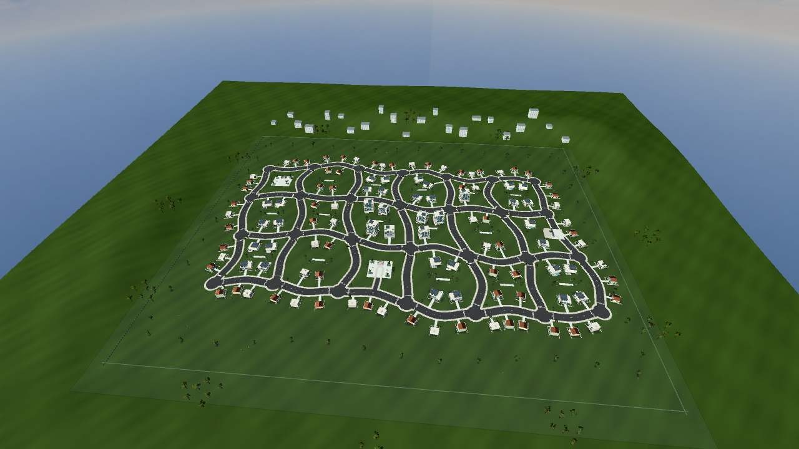

Jardins do Vale: 6 → 18 quarteirões
473.088 m², calçadas unidas, relevo e áreas verdes. Arraste para comparar.
A câmera da vista geral usa a mesma posição, alvo, lente e preset nas duas versões. O terreno e a distribuição do bairro mudaram.
Mapa completo ampliado

Capturas estáticas em Equilibrado, AMD R7 M260. Não são benchmark. Nas vistas de inspeção, névoa e culling por distância foram desligados; a captura de jogo usa as configurações reais. Os faróis ligados/desligados foram capturados sob iluminação escurecida somente para inspeção; não foi implementado ciclo dia/noite.
Registro da etapa